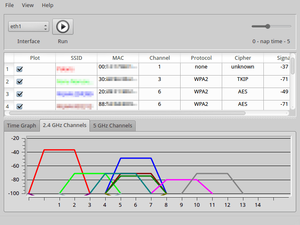

LinSSID
Dieser Artikel wurde für die folgenden Ubuntu-Versionen getestet:
Ubuntu 16.04 Xenial Xerus
Ubuntu 14.04 Trusty Tahr
Zum Verständnis dieses Artikels sind folgende Seiten hilfreich:
LinSSID  ist ein kleines grafisches Werkzeug, um eine Anzeige der benachbarten Funknetzwerke (Access Points) zu erhalten. Solche Programme werden auch als WLAN-Sniffer bezeichnet. Wer bei der Einrichtung eines neuen Access Points einen Überblick vorhandener WLANs benötigt, braucht dazu Eckdaten wie
ist ein kleines grafisches Werkzeug, um eine Anzeige der benachbarten Funknetzwerke (Access Points) zu erhalten. Solche Programme werden auch als WLAN-Sniffer bezeichnet. Wer bei der Einrichtung eines neuen Access Points einen Überblick vorhandener WLANs benötigt, braucht dazu Eckdaten wie
WLAN-Name (SSID)
Kanal (Channel)
Signalstärke
Verschlüsselungsart
Für die Programmoberfläche wird Qt genutzt, die Programmsprache ist Englisch.
Voraussetzungen¶
Das eigentliche "Sniffen" wird durch das Kommandozeilenprogramm iw erledigt, was aber nicht immer vorinstalliert [1] ist:
iw
 mit apturl
mit apturl
Paketliste zum Kopieren:
sudo apt-get install iw
sudo aptitude install iw
Installation¶
 Das Programm ist ab Ubuntu 15.10 in den offiziellen Paketquellen enthalten. Folgendes Paket muss installiert werden:
Das Programm ist ab Ubuntu 15.10 in den offiziellen Paketquellen enthalten. Folgendes Paket muss installiert werden:
linssid (universe)
mit apturl
Paketliste zum Kopieren:
sudo apt-get install linssid
sudo aptitude install linssid
Zur Installation bei älteren Ubuntu-Versionen muss man auf ein "Personal Package Archiv" (PPA) [2] oder ein Fremdpaket ausweichen.
PPA¶
Adresszeile zum Hinzufügen des PPAs:
ppa:wseverin/ppa
Hinweis!
Zusätzliche Fremdquellen können das System gefährden.
Ein PPA unterstützt nicht zwangsläufig alle Ubuntu-Versionen. Weitere Informationen sind der  PPA-Beschreibung des Eigentümers/Teams wseverin zu entnehmen.
PPA-Beschreibung des Eigentümers/Teams wseverin zu entnehmen.
Damit Pakete aus dem PPA genutzt werden können, müssen die Paketquellen neu eingelesen werden.
Nach dem Aktualisieren der Paketquellen erfolgt die Installation wie oben angegeben.
Fremdpaket¶
Alternativ kann von der Projektseite ein Fremdpaket  als .deb-Datei heruntergeladen und manuell installiert [3] werden.
als .deb-Datei heruntergeladen und manuell installiert [3] werden.
Hinweis!
Fremdpakete können das System gefährden.
Bedienung¶

Anschließend kann das Programm bei Ubuntu-Varianten mit einem Anwendungsmenü über den Eintrag "Internet -> LinSSID" aufgerufen werden [4]. Beim Programmstart wird das Root- bzw. Administrator-Kennwort abgefragt (als "First shot" bezeichnet). Dies ist notwendig, da zum Ermitteln der Funknetze der Befehl "iw dev NETZWERKSCHNITTSTELLE scan" benutzt wird und dieser nur funktioniert, wenn er mit Root-Rechten [5] gerufen wird (siehe iw).
Die Nutzung des Programms gestaltet sich einfach: man wählt die WLAN-Schnittstelle (Interface, z.B. wlan0) aus – sofern sie nicht automatisch erkannt wurde – und betätigt die Schaltfläche "Run" . Nun werden die gefundenen Funknetzwerke inklusive ihrer Parameter aufgelistet.
Dieser Vorgang lässt sich durch die gleiche Schaltfläche bzw. das Symbol wieder beenden. Die Ergebnisse lassen sich über ihren Spaltenkopf auf- bzw. absteigend sortieren.
Weitere Möglichkeiten¶
Über den Menüpunkt "View" können neben den eingangs erwähnten Eckdaten weitere Details aktiviert werden. Interessant ist z.B. die Anzeige von "Vendor", die den ursprünglichen Hersteller des Access Points sichtbar macht und bei der Lokalisierung des dazugehörigen WLANs nützlich sein kann. Vorgenommene Einstellungen werden in der Datei ~/.linssid.prefs im Homeverzeichnis gespeichert.
Mit "File -> Preferences -> Log Data" kann ein Protokoll erstellt werden. Dieses wird als ~/LinSSID.datalog gespeichert.
Ein Schieberegler ("nap time") stellt ein, wie häufig die WLAN-Suche aktualisiert wird (
0steht für konstantes Scannen; der Standardwert2ist in der Praxis besser geeignet)
Problembehebung¶
Manche WLANs werden nicht sofort gefunden. Dann sollte man das Programm längere Zeit laufen lassen.
 Übersichtsartikel
Übersichtsartikel- Erstellt mit Inyoka
-
 2004 – 2017 ubuntuusers.de • Einige Rechte vorbehalten
2004 – 2017 ubuntuusers.de • Einige Rechte vorbehalten
Lizenz • Kontakt • Datenschutz • Impressum • Serverstatus -
Serverhousing gespendet von